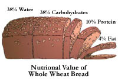

|
Wheat's Contribution to Saskatchewan's Agricultural Production
Total farm cash receipts exceed 3 billion dollars in
Saskatchewan. Wheat alone made up nearly 45% of this amount.
Saskatchewan farmers produce approximately 13 million tonnes of wheat each year. Eleven and a half million tonnes finds its way into commercial markets, with a total gross value of about 19 million dollars.
Ninety percent of the money made from wheat comes from export sales.

The Nutritional Value of 100% Whole Wheat Bread
Saskatchewan's Canada Western Red Spring Wheat is internationally renowned for the baking quality of its flour. Wheat flour products like bread and pasta are a staple source of nutrients for people all over the world.
Whole wheat flour is made from the whole kernel, including the nutrient-rich bran and wheat germ; white flour is made from the endosperm, which is primarily starch. The bran and wheat germ are the main source of most of the nutrients in whole wheat flour.
Bread is often called "the staff of life", because it is an essential part of the human diet. Whole wheat bread is a particularly nutritious food, and excellent source of carbohydrate, protein, B vitamins, mineral and fibre.
Whole wheat bread contains less saturated and unsaturated fat than enriched white bread, and is a wise choice for health-conscious consumers.

The Elevator
The grain elevator is one of the most recognised landmarks across the Prairies and the American Grain Belt. At the time of its introduction, the elevator offered a big advantage in handling grain in bulk. Previously, grain had to be bagged at the farm and loaded and unloaded several times before reaching its final destination.
The elevator is the farmers' link to both domestic and overseas markets. Early elevators stored 650 to 800 tonnes of grain and were built 11 to 16 km apart. This distance was considered reasonable for horse drawn wagons to deliver the grain from the farm. Modern elevators are much further apart but can store up to 10,200 tonnes and accommodate semi-trailer trucks with a loaded weight of 80 tonnes. Newer elevators are highly automated moving 340 tonnes of grain per hour.

Grain Marketing
The Canadian Wheat Board is the sole marketing agent for wheat grown in Canada for human consumption or destined for export. A farmer is not, for example, able to drive a truck-load of wheat to the United States and sell it to other farmers or companies.
|